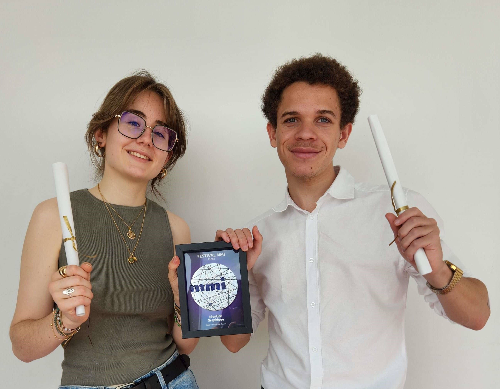
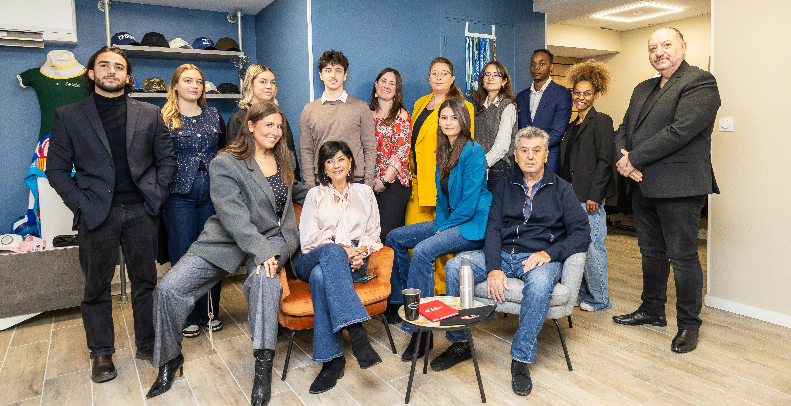
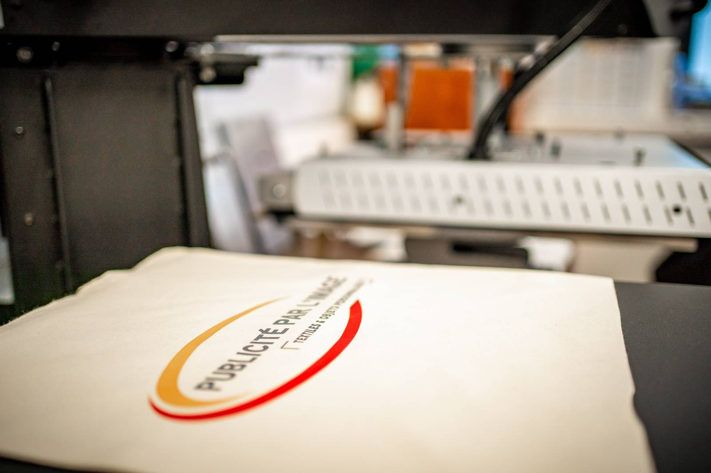

À propos de moi

Qui suis-je ?
Emma Siffredi, étudiante dans le domaine du multimédia, en troisème année du BUT Métiers du Multimédia et de l’Internet à Toulon, je suis passionnée de cinéma et d’arts appliqués. J’aime aussi explorer les différentes formes d’expression, en combinant les outils numériques et analogiques pour créer des œuvres uniques !
Mes passions
Le monde du multimédia, ce parcours créatif et technique, me permet de créer de nombreux projets tout en répondant à mes passions. J’apprécie particulièrement le processus de création, à partir de la phase conceptuelle jusqu’à la réalisation finale.
Cette passion pour la création m'a encouragé à participer au MMI festival 2024, en présentant la charte graphique d'Akta Prod. Ainsi, j'ai pu gagner aux côtés d'Ilan Ronel le deuxième prix dans la catégorie identité visuelle !

Mon parcours
Après avoir obtenu mon baccalauréat en 2021, j'ai décidé de poursuivre mes études dans le domaine du multimédia. J'ai intégré le BUT Métiers du Multimédia et de l’Internet à Toulon, où j'ai pu développer mes compétences techniques et créatives à travers divers projets académiques et personnels. Mon parcours m'a permis d'explorer différents aspects du multimédia, de la conception graphique à la production audiovisuelle, en passant par le développement web et la communication digitale.
Actuellement en alternance au sein de l'entreprise 3BPRO à Aubagne, j'occupe le poste d'assistante graphiste. Cette expérience professionnelle me permet de découvrir les réalités du monde du travail, d'appliquer mes compétences dans un contexte professionnel et aussi d'en apprendre plus sur le domaine du print en parallèle de mes études tournées vers le numérique.

